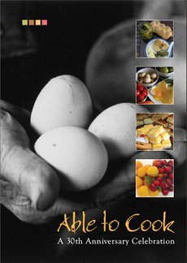

Monday, July the 5th, 2010
back to: title, date or indexes
Here is a list I never thought I would be included in : General Sir Richard Dannatt… Susannah York… Rt Hon Sir John Major… Prunella Scales… Frederick Forsyth… Sir Michael Caine… Sir Richard Branson… Joanna Lumley… Nicholas Parsons… Stephen Fry… Frank Key. Oo-er, missus!
Your favourite impoverished scribbler is in this august company as a contributor to that recipe book I was telling you about a few weeks ago, in connection with my participation in a broadcast by Phil Minton's Feral Choir. Mr Minton's recipe, Deptford Squat Stir-Fry, is truly sensational.
The book is Able To Cook, and all proceeds go to the charities Age UK Norfolk and Connects & Co. I command, by diktat, all readers to go here, immediately, and buy a copy.

My thanks to R., by the way.